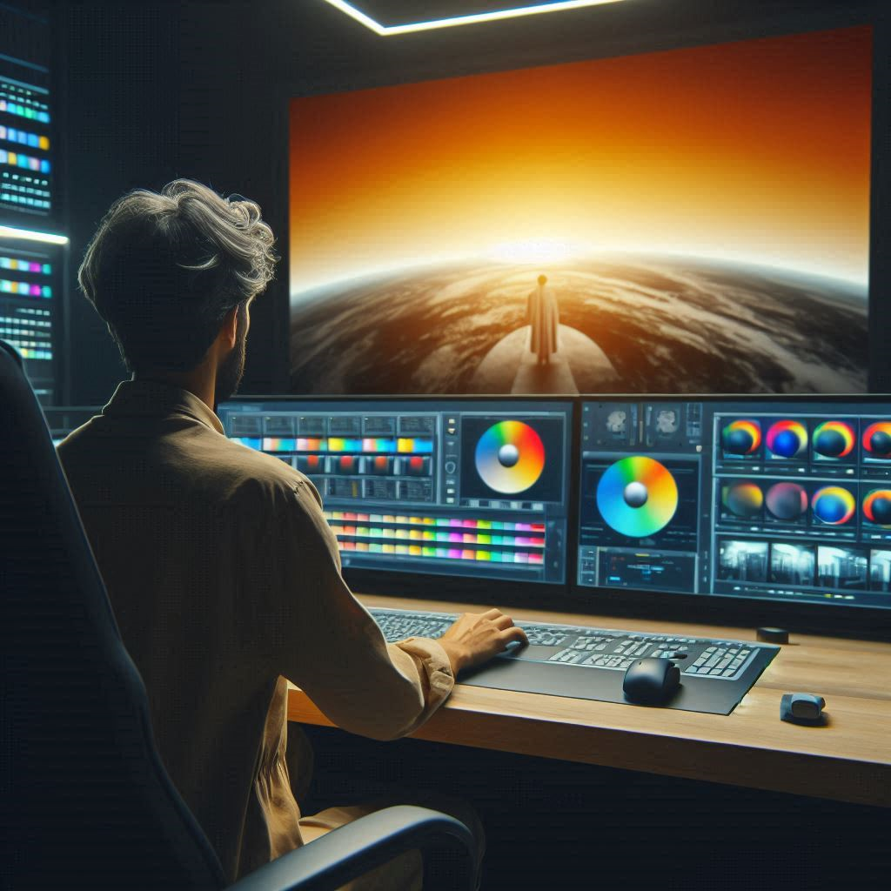

Edición de vídeo

¿Tienes material grabado que necesitas pulir y darle un toque profesional? Ofrezco servicios de edición de vídeo para convertir tus imágenes en historias cautivadoras. Desde cortometrajes hasta videos musicales, estoy aquí para transformar tu visión en realidad.
Corrección de color
¿Las tonalidades de tu vídeo no se ven como esperabas? No te preocupes, puedo ajustar el color y el brillo para que cada fotograma tenga el aspecto que deseas. Desde sutiles mejoras hasta cambios dramáticos, aseguro que tus imágenes sean visualmente impactantes.
Montaje y composición

¿Quieres añadir efectos especiales o combinar varias tomas en una sola escena? Con habilidades en montaje y composición, puedo crear secuencias fluidas y sorprendentes que cautivarán a tu audiencia.
Animación gráfica

¿Necesitas agregar gráficos animados o logotipos a tus vídeos? Con experiencia en animación, puedo dar vida a tus ideas y hacer que tus proyectos destaquen entre la multitud.
Mezcla de sonido

El audio es tan importante como el vídeo. Ofrezco servicios de mezcla de sonido para asegurarme de que cada palabra se escuche clara y cada efecto tenga el impacto deseado. Desde la eliminación de ruido hasta la creación de paisajes sonoros inmersivos, estoy aquí para que tu audio brille.
Subtitulado y doblaje

¿Necesitas llegar a una audiencia internacional o hacer accesible tu contenido para personas con discapacidad auditiva? Ofrezco servicios de subtitulado y doblaje para que tu mensaje llegue a todos, sin importar el idioma o las barreras de audición.
Múltiples formatos
No importa si tu vídeo se va a mostrar en una pantalla grande o en un dispositivo móvil, puedo entregar tu proyecto en una variedad de formatos para garantizar una reproducción perfecta en cualquier plataforma.
Control de calidad

¿Necesitas asegurar que tu material audiovisual cumpla con los más altos estándares? Reviso y garantizo que los materiales cumplan con especificaciones técnicas y creativas, verifico formatos, identifico artefactos, reviso consistencia narrativa, corrijo color y audio, y aseguro el cumplimiento de normativas y derechos de autor para un producto óptimo.